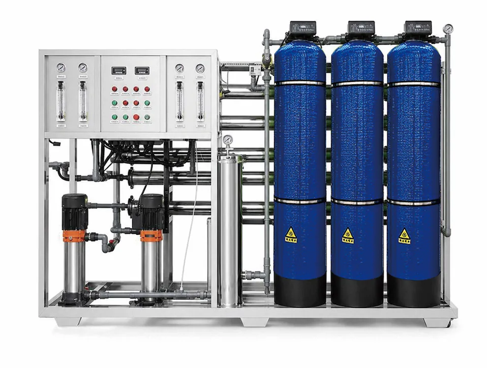

Sistema RO su telaio con pretrattamento a tre serbatoi
Sistema RO integrato su telaio con serbatoi automatici a sabbia e carbone, filtrazione di precisione e 1000-3000 L/h di acqua purificata per progetti OEM.
Invia richiesta
L’impianto RO integrato su telaio con pretrattamento a tre serbatoi di Yuchen Water è progettato per progetti B2B commerciali e industriali leggeri che trattano acqua di rete o acqua di falda. Il sistema combina serbatoio automatico a sabbia, serbatoio automatico a carbone, filtro di precisione e osmosi inversa su un unico telaio, con 1000-3000 L/h di acqua purificata e pressione in ingresso 0.1-0.4 MPa. Aspetto, flusso di processo, configurazione e funzioni sono personalizzabili in base all’analisi dell’acqua e alle richieste dell’acquirente.
| Voce | Specifica |
|---|---|
| Tipo di prodotto | Impianto RO integrato su telaio con pretrattamento a tre serbatoi 1000-3000 L/h |
| Modalità operativa | Funzionamento intelligente completamente automatico, con modalità di servizio manuale secondo il progetto |
| Processo di trattamento | Serbatoio automatico a sabbia + serbatoio automatico a carbone + addolcitore automatico + filtro di precisione + osmosi inversa |
| Portata acqua pura | 1000-3000 L/h |
| Acqua in ingresso | Acqua di rete e acqua sotterranea |
| Pressione in ingresso | 0.1-0.4 MPa |
| Personalizzazione del progetto | Aspetto, flusso di processo, configurazione dell’impianto, quadro di controllo e funzioni di protezione possono essere adattati all’acqua di origine e allo spazio del progetto |
| Applicazione | Hotel, fabbriche, scuole, comunità, cucine commerciali e progetti di trattamento acqua |
| OEM/ODM | Portata, pompa, membrana, serbatoi, tubazioni, tensione, lingua pannello e imballo personalizzabili |
| MOQ | Confermato secondo capacità, configurazione e livello OEM |
Sistema RO integrato su telaio con serbatoi automatici a sabbia e carbone, filtrazione di precisione e 1000-3000 L/h di acqua purificata per progetti OEM.
| Processo di trattamento | Serbatoio automatico a sabbia + serbatoio automatico a carbone + addolcitore automatico + filtro di precisione + osmosi inversa |
|---|---|
| Acqua in ingresso | Acqua di rete e acqua sotterranea |
| Pressione in ingresso | 0.1-0.4 MPa |
| Personalizzazione del progetto | Aspetto, flusso di processo, configurazione dell’impianto, quadro di controllo e funzioni di protezione possono essere adattati all’acqua di origine e allo spazio del progetto |
Serbatoio automatico a sabbia + serbatoio automatico a carbone + addolcitore automatico + filtro di precisione + osmosi inversa
1000-3000 L/h
0.1-0.4 MPa
Aspetto, flusso di processo, configurazione dell’impianto, quadro di controllo e funzioni di protezione possono essere adattati all’acqua di origine e allo spazio del progetto
Sistema RO integrato su telaio con serbatoi automatici a sabbia e carbone, filtrazione di precisione e 1000-3000 L/h di acqua purificata per progetti OEM.
Invia richiesta
Sistema RO integrato su telaio con serbatoi automatici a sabbia e carbone, filtrazione di precisione e 1000-3000 L/h di acqua purificata per progetti OEM.
Invia richiesta
Sistema RO integrato su telaio con serbatoi automatici a sabbia e carbone, filtrazione di precisione e 1000-3000 L/h di acqua purificata per progetti OEM.
Invia richiestaL’impianto RO integrato su telaio con pretrattamento a tre serbatoi di Yuchen Water è progettato per progetti B2B commerciali e industriali leggeri che trattano acqua di rete o acqua di falda. Il sistema combina serbatoio automatico a sabbia, serbatoio automatico a carbone, filtro di precisione e osmosi inversa su un unico telaio, con 1000-3000 L/h di acqua purificata e pressione in ingresso 0.1-0.4 MPa. Aspetto, flusso di processo, configurazione e funzioni sono personalizzabili in base all’analisi dell’acqua e alle richieste dell’acquirente.